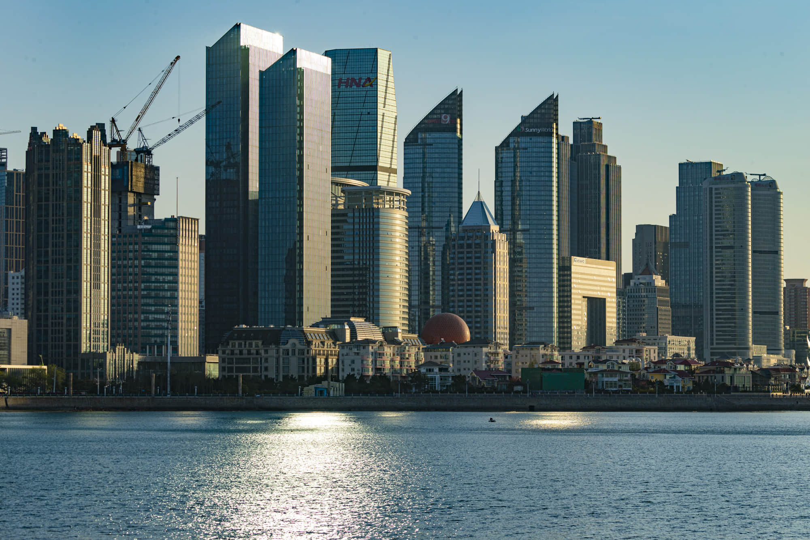
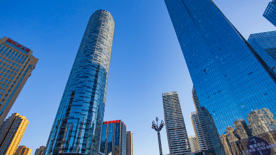
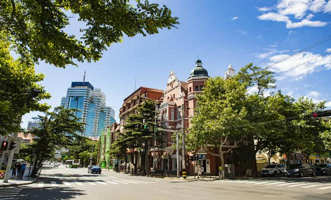
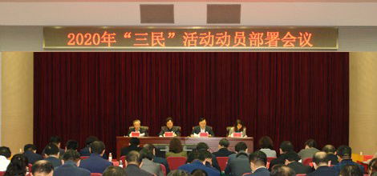
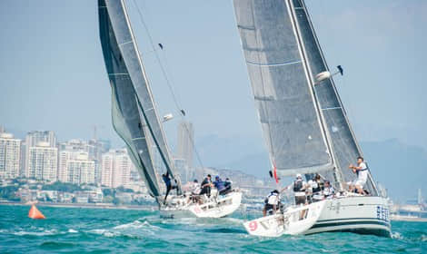
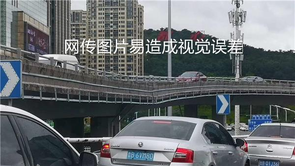

市住房和城乡建设局今年倡导实行了“先验房后交房”的新房交付模式,打破以往“买了房子看不见,缴费才让领钥匙”的不平等做法
2019信网年终盘点 | 只争朝夕 不负韶华
2020青岛经济发展如何
这些关键词是重点

2020年是“十三五”规划收官之年，面对新冠肺炎疫情防控常态化新形势，青岛顶住压力在经济领域实现多个“小目标”。“十三五”前四年全市生产总值年均增长7.2%，2019年达到1.17万亿元，提前一年实现比2010年翻一番目标。
详情
智慧城市上“云”端
科创为青岛带来新动能

今年以来，青岛市大数据局全面对标上海、深圳、杭州等先进城市，出台了《关于进一步加快新型智慧城市建设》，加快推动新型智慧城市建设，构建政府引导、企业主导的智慧城市发展模式，一片数字经济“热带雨林”正繁茂生长。
详情
2020走出“M”形
青岛楼市回归理性

2020年对青岛各大房企和市民来说，是特殊的一年。还有不到半个月的时间，今年楼市即将收官。年初受疫情影响，楼市几乎无成交，三四月份全市成交量大幅上升。“金九银十”后，市场又回到低点。青岛楼市这一年经历了起起伏伏，仿佛走出了一个M形。对于那些一直在“等等”的购房者来说，你们期望的“楼市大戏”开始上演。
详情
交房
标准
明确开发企业按交付标准设置实体交付样板房，并逐一与购房者书面确认装修的内容，做到“所见即所得”
新规
新购后家庭拥有住房不应超过2套，且出售的原有住房应取得《不动产权证书》满2年(2018年4月18日之后新购的住房仍需执行满5年上市的政策)。
2020年青岛
“三民”活动

今年，38个市政府部门负责人分四组以云述职的方式向广大市民报告了工作，市民代表通过网络平台收看部门云述职，并在线进行评议。社会各界广泛关注，广大市民热情参与，提出了许多针对性强、参考价值高的意见和建议。
详情
海陆空交通立体发展
青岛驶上“快车道”
2020年青岛海陆空交通大项目建设克服困难，取得了令人瞩目的成就。胶州湾第二隧道开工建设、潍莱高铁开通、胶东机场进入飞行校验阶段，年底前将迎来青岛史上第一次“双地铁”开通，这是青岛城市建设发展史上的一座里程碑。
详情
感人故事扎堆共筑
“温情青岛”
2020年青岛海陆空交通大项目建设克服困难，取得了令人瞩目的成就。胶州湾第二隧道开工建设、潍莱高铁开通、胶东机场进入飞行校验阶段，年底前将迎来青岛史上第一次“双地铁”开通，这是青岛城市建设发展史上的一座里程碑。
详情
疫情下读书不易
2020青岛教育新变革
近年来，受全面二孩政策实施、城镇化进程加快、外来人口流入等因素影响，青岛适龄幼儿、青少年就学人数逐年大幅增加，在青岛市城区范围，尤其是部分热点区域，存在入学、入园压力大的情况。2020年，“开工建设中小学和幼儿园”已经是第三年被列入市办实事，目标80所。
详情
齐心战疫共闯关卡
2020青岛医疗版图为健康加码
一年来，青岛卫生健康系统将抗击疫情作为重中之重，全力以赴筛查、防控；加快推进年度重点工作目标落实，市公共卫生临床中心开工建设、一批新建医院三甲医院分院相继开诊，勾勒出全新的青岛医疗版图；实施16 项健康青岛行动三年计划，推进胶东经济圈卫生健康一体化发展合作......
详情
青岛体育这一年
疫情困境下迸发耀眼光芒

在极其困难的条件下，青岛体育在这一年取得了不俗的成绩。疫情以来首项恢复的国内大型职业体育赛事，CBA联赛在青岛“重启”；黄海青港中超保级；青岛足协换届选举，青岛足球有了新带头人......每一项成绩的背后都是团队的辛苦付出。青岛时尚体育产业也同样迎来新的发展机遇。
详情
2020权威辟谣持续在场

2020年，一场突如其来的疫情席卷全球，新冠病毒肆虐。比病毒更可怕的，是与之相伴的谣言，在举国抗疫之时，它们却在制造恐慌。涉疫谣言之外，新冒出的谣言依旧不少。年终岁尾之际，信网盘点2020那些热传的谣言，持续在场为您解疑释惑。
详情